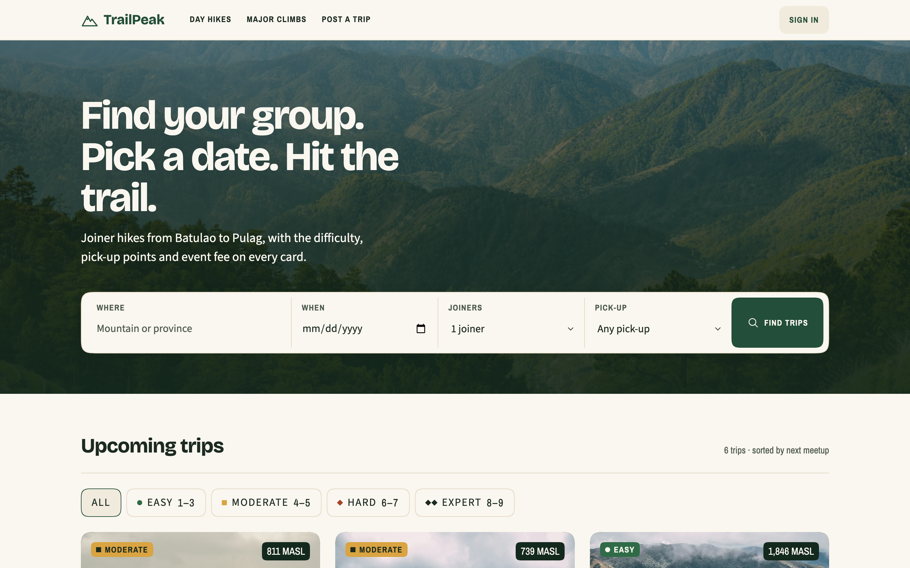

Difficulty in color and shape
Each level has a trail-blaze color and a sign shape: circle, square, diamond, double diamond. Difficulty never depends on color alone.
Joiner hikes in the Philippines live in long Facebook posts and get booked one DM at a time. TrailPeak turns those posts into trips you can search, compare, and reserve with a down payment, and gives organizers one place to run them.

Before designing anything, I read 27 recent posts in Hiking Club Philippines, a public Facebook group with about 148,000 members. Organizers already post the same information every time, but by hand, so joiners can't search or compare anything.
I kept the words and numbers local hikers already use instead of inventing new ones.
Each level has a trail-blaze color and a sign shape: circle, square, diamond, double diamond. Difficulty never depends on color alone.
Lake blue means availability and nothing else. Slots left are stated calmly, with no red "book na bago maagawan" urgency.
Every trip shows the event fee and the DP. Organizers must list what's not included before they can publish.
Moving a date is free once, 7+ days before. Cancelling always says first that the DP won't be refunded, and offers the free move instead.
Tokens, type and components live in a DESIGN.md that passes Google's linter with no errors or warnings. Corners are concentric squircles.
Organizers post once and copy clean Facebook text with a link. Their dashboard shows slots per date, a joiner checklist and DP payouts.
I audited every page against WCAG 2.1 AA with an automated scan and keyboard-only use, and fixed all 13 issues it found. Focus rings now stay visible on the dark booking panel, form errors are announced and move focus to the problem, every control is at least 44px, and numbers carry words for screen readers, like "Difficulty 4/9".
This is a front-end prototype: accounts, bookings and payments are simulated in the browser. Next steps: a VoiceOver test, interviews with 3–5 organizers and 5 joiners from the groups, and then real accounts and GCash or Maya payments on a backend.
A cocktail bar landing page where the scroll tells the story.
Read the case study